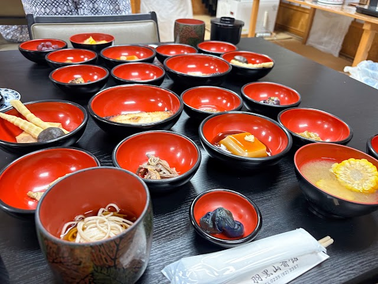
| 営業時間 | 月・火・水・木・金・土・日 11:00〜14:00 |
|---|---|
| 定休日 | なし(要最終確認) |
| 住所 | 山形県鶴岡市羽黒町手向羽黒山３３ |
| 予約 | 要確認 — ☎ 0235-62-2357 ／ 公式サイト |
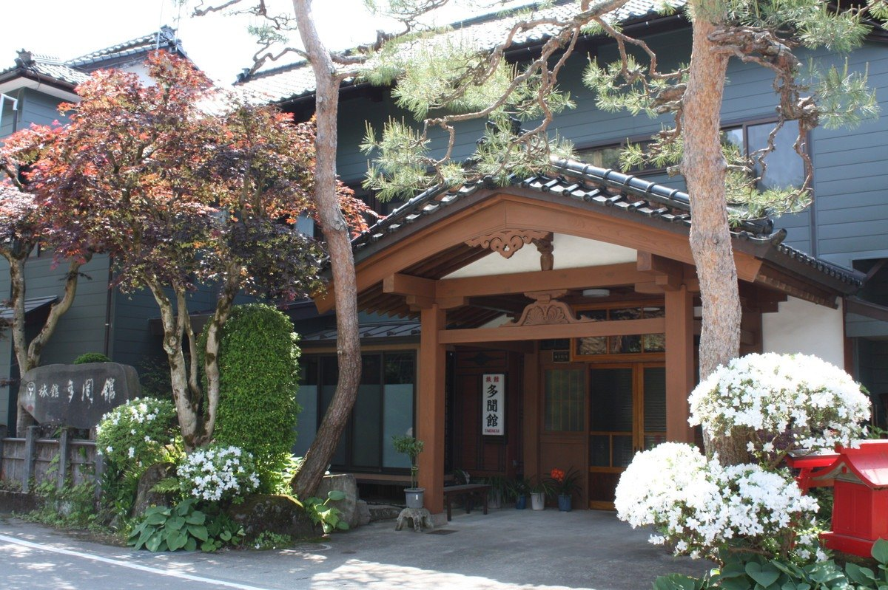
| 営業時間 | 月・火・水・木・金・土・日 6:00〜22:00 |
|---|---|
| 定休日 | なし(要最終確認) |
| 住所 | 山形県鶴岡市羽黒町手向手向１１５ |
| 予約 | 要確認 — ☎ 0235-62-2201 ／ 公式サイト |
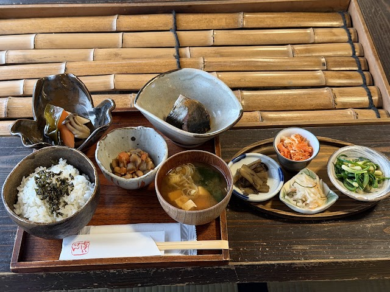
| 営業時間 | 月・木・金・土・日 11:30〜14:00 |
|---|---|
| 定休日 | 火・水曜 |
| 住所 | 山形県鶴岡市西荒屋宮の根９１ |
| 予約 | 可 — ☎ 0235-57-2130 ／ 公式サイト |
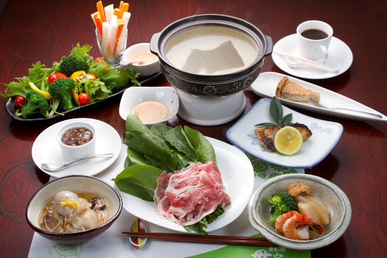
| 営業時間 | 月・火・水・木・金・土・日 11:00〜14:30 |
|---|---|
| 定休日 | なし(要最終確認) |
| 住所 | 山形県鶴岡市福田甲４１ |
| 予約 | 可 — ☎ 0235-25-8694 ／ 公式サイト |
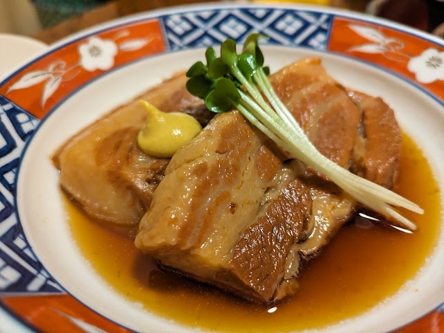
| 営業時間 | 月・火・水・木・金・土・日 11:00〜14:00, 17:00〜22:00 |
|---|---|
| 定休日 | なし(要最終確認) |
| 住所 | 山形県鶴岡市山王町８−１０ |
| 予約 | 可 — ☎ 0235-23-3791 ／ 公式サイト |
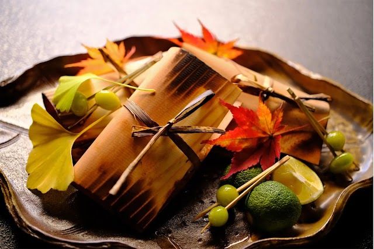
| 営業時間 | 月・火・水・木・金・土・日 11:30〜21:30 |
|---|---|
| 定休日 | なし(要最終確認) |
| 住所 | 山形県鶴岡市三光町２−３６ |
| 予約 | 可 — ☎ 0235-22-0637 ／ 公式サイト |
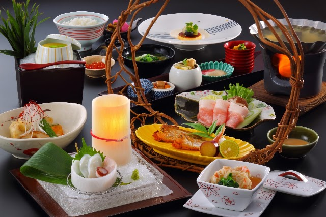
| 営業時間 | 月・火・水・木・金・土・日 14:00〜11:00 |
|---|---|
| 定休日 | なし(要最終確認) |
| 住所 | 山形県鶴岡市湯田川乙１９ |
| 予約 | 要確認 — ☎ 0235-35-2777 ／ 公式サイト |
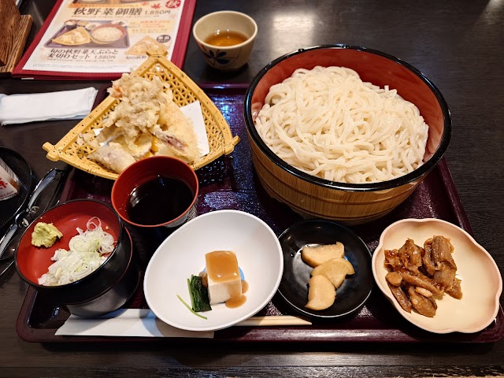
| 営業時間 | 月・火・水・木・金・土・日 11:00〜16:30 |
|---|---|
| 定休日 | なし(要最終確認) |
| 住所 | 山形県鶴岡市布目中通８０−１ |
| 予約 | 可 — ☎ 0235-25-5111 ／ 公式サイト |
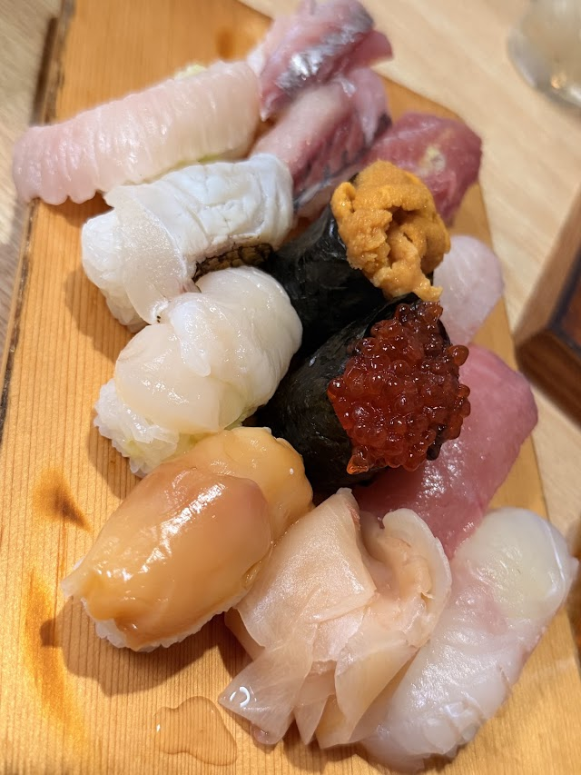
| 営業時間 | 月・火・水・木・金・土 17:00〜23:00 |
|---|---|
| 定休日 | 日曜 |
| 住所 | 山形県鶴岡市昭和町８−４１ |
| 予約 | 可 — ☎ 0235-24-4727 ／ 公式サイト |
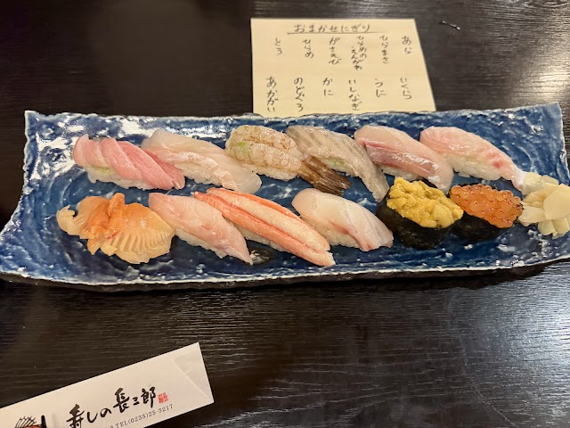
| 営業時間 | 火・水・木・金・土・日 17:00〜23:30 |
|---|---|
| 定休日 | 月曜 |
| 住所 | 山形県鶴岡市泉町６−３ |
| 予約 | 可 — ☎ 0235-25-3217 ／ 公式サイト |
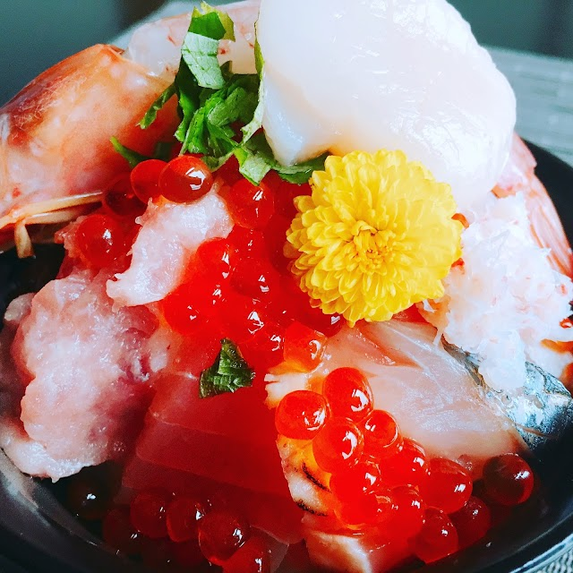
| 営業時間 | 月・火・金・土 11:45〜14:00, 17:30〜22:00 ／ 日 11:45〜14:00, 17:30〜20:30 |
|---|---|
| 定休日 | 水・木曜 |
| 住所 | 山形県鶴岡市美原町２７−２６ |
| 予約 | 可 — ☎ 0235-64-8351 ／ 公式サイト |
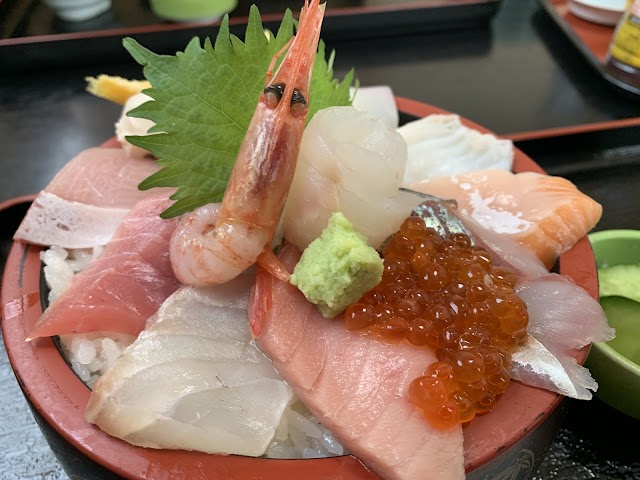
| 営業時間 | 火・水・木・金・土・日 11:30〜14:00, 17:30〜22:00 |
|---|---|
| 定休日 | 月曜 |
| 住所 | 山形県鶴岡市美咲町２−４６ |
| 予約 | 可 — ☎ 0235-25-0086 ／ 公式サイト |
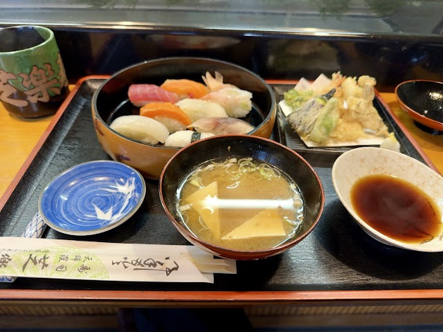
| 営業時間 | 月・火・水・木・金・土 11:30〜14:00, 17:00〜22:30 ／ 日 11:30〜14:00, 17:00〜22:00 |
|---|---|
| 定休日 | なし(要最終確認) |
| 住所 | 山形県鶴岡市本町２丁目２−１２ |
| 予約 | 可 — ☎ 0235-22-1521 ／ 公式サイト |
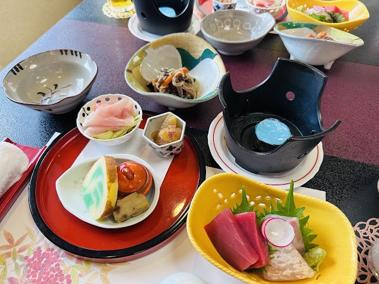
| 営業時間 | 月・水・木・土 18:00〜23:00 ／ 火・金 17:30〜23:00 |
|---|---|
| 定休日 | 日曜 |
| 住所 | 山形県鶴岡市泉町６−６ |
| 予約 | 可 — ☎ 0235-25-2283 ／ 公式サイト |
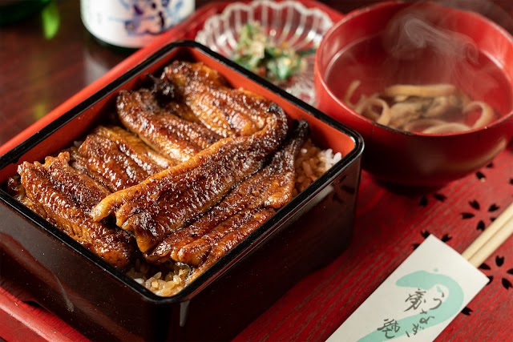
| 営業時間 | 月・火・水・木・金・土・日 11:30〜23:00 |
|---|---|
| 定休日 | なし(要最終確認) |
| 住所 | 山形県鶴岡市末広町１１−９ |
| 予約 | 可 — ☎ 0235-24-3701 ／ 公式サイト |
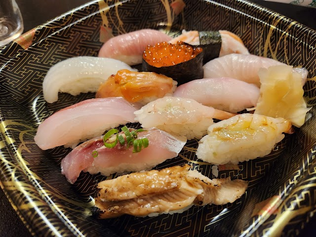
| 営業時間 | 火・水・木・金・土・日 17:00〜0:00 |
|---|---|
| 定休日 | 月曜 |
| 住所 | 山形県鶴岡市湯温海甲２２９ |
| 予約 | 可 — ☎ 0235-43-3128 ／ 公式サイト |
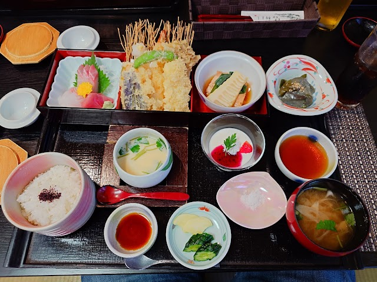
| 営業時間 | 火・水・木・金・土 11:30〜13:30, 17:30〜21:30 ／ 日 17:30〜21:30 |
|---|---|
| 定休日 | 月曜 |
| 住所 | 山形県鶴岡市東原町９−３６ |
| 予約 | 可 — ☎ 0235-29-9851 ／ 公式サイト |
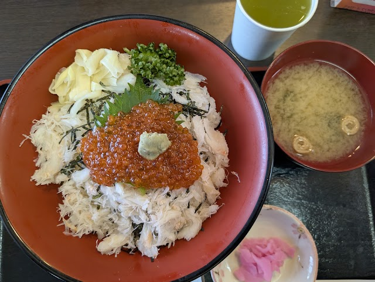
| 営業時間 | 月・火・水・金 11:00〜15:00 ／ 土・日 11:00〜16:00 |
|---|---|
| 定休日 | 木曜 |
| 住所 | 山形県鶴岡市布目中通８０−１ |
| 予約 | 要確認 — ☎ 080-6043-3389 ／ 公式サイト |
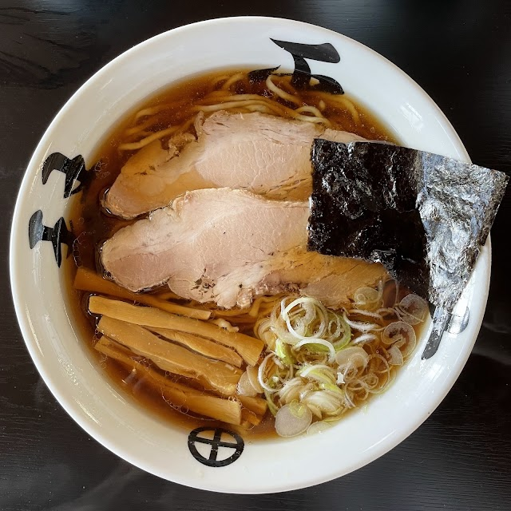
| 営業時間 | 11:00〜14:00(整理券配布8:00〜)※10月1日〜5月31日の期間限定営業 |
|---|---|
| 定休日 | 木曜(祝日は営業)、6月〜9月は休業 |
| 住所 | 山形県鶴岡市三瀬巳３８１−４６ |
| 予約 | 要確認 — ☎ 0235-73-3230 ／ 公式サイト |
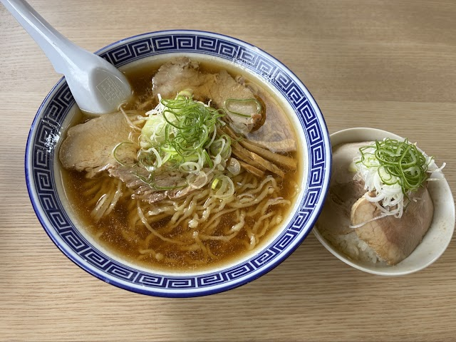
| 営業時間 | 月・火・水・金・土・日 11:00〜14:00 |
|---|---|
| 定休日 | 木曜 |
| 住所 | 山形県鶴岡市羽黒町黒瀬黒瀬２０２ |
| 予約 | 要確認 — 公式サイト |
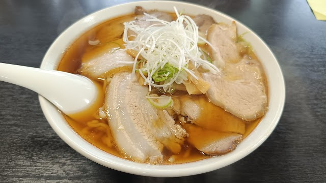
| 営業時間 | 月・木・金・土・日 11:00〜14:00 |
|---|---|
| 定休日 | 火・水曜 |
| 住所 | 山形県鶴岡市田代大坂山３０９ |
| 予約 | 要確認 — ☎ 0235-57-4614 ／ 公式サイト |
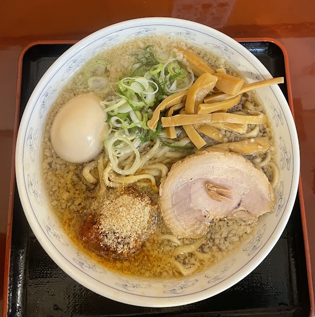
| 営業時間 | 月・火・水・木・金・土・日 11:00〜20:30 |
|---|---|
| 定休日 | なし(要最終確認) |
| 住所 | 山形県鶴岡市道形町１２−８−１ |
| 予約 | 要確認 — ☎ 0235-28-2550 ／ 公式サイト |
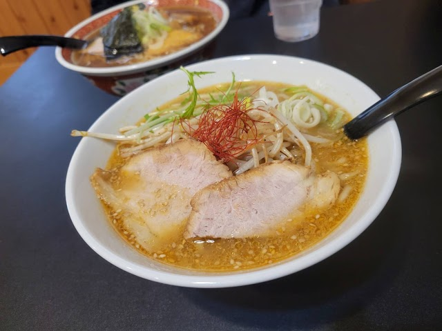
| 営業時間 | 月・水・木・金・土・日 11:00〜14:45 |
|---|---|
| 定休日 | 火曜 |
| 住所 | 山形県鶴岡市湯温海甲１６２ |
| 予約 | 要確認 — ☎ 0235-43-3113 |
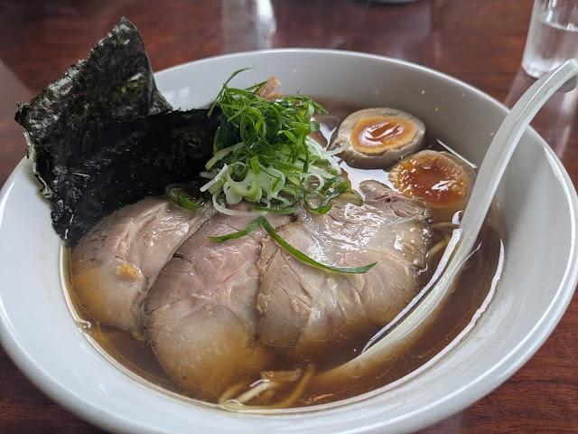
| 営業時間 | 火・水・木・金・土・日 11:00〜14:15 |
|---|---|
| 定休日 | 月曜 |
| 住所 | 山形県鶴岡市藤島山ノ前 字山の前45-1 |
| 予約 | 要確認 — ☎ 070-1141-6644 ／ 公式サイト |
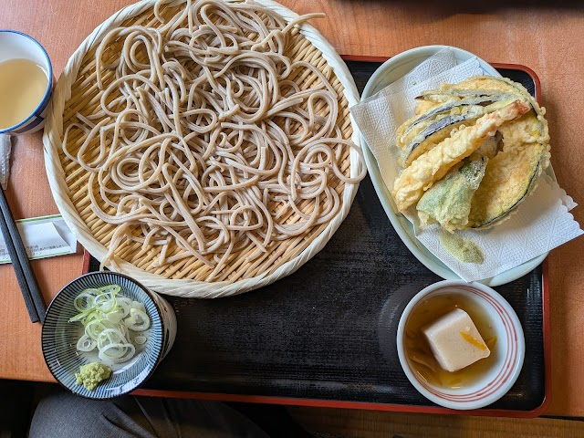
| 営業時間 | 月・水・木・金・土・日 11:00〜16:00 |
|---|---|
| 定休日 | 火曜 |
| 住所 | 山形県鶴岡市越中山名平４−２ |
| 予約 | 可 — ☎ 0235-53-3413 ／ 公式サイト |
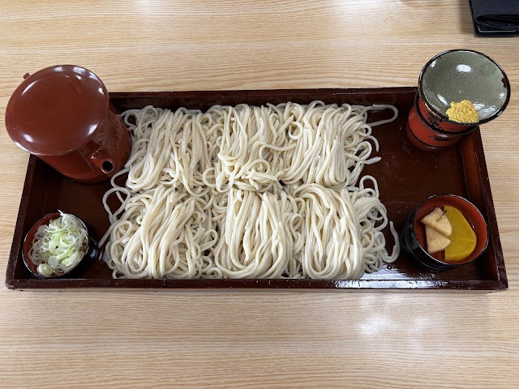
| 営業時間 | 月・火・木・金・土・日 11:00〜15:00 |
|---|---|
| 定休日 | 水曜 |
| 住所 | 山形県鶴岡市馬町字枇杷川原74 |
| 予約 | 可 — ☎ 0235-33-2257 ／ 公式サイト |
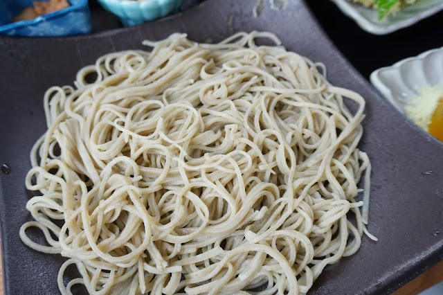
| 営業時間 | 土・日 11:00〜14:00 |
|---|---|
| 定休日 | 月・火・水・木・金曜 |
| 住所 | 山形県鶴岡市越沢蛇喰１１１−１ |
| 予約 | 要確認 — ☎ 0235-47-2430 ／ 公式サイト |
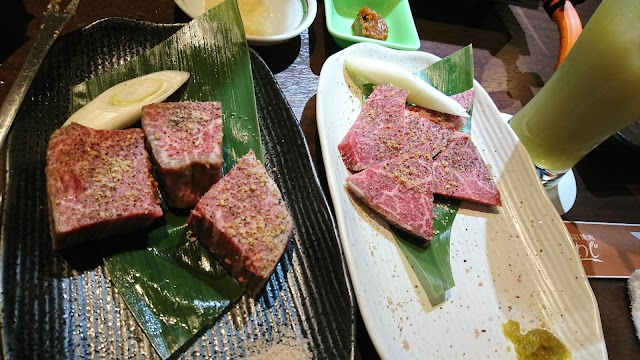
| 営業時間 | 月・水・木・金・土・日 17:00〜23:00 |
|---|---|
| 定休日 | 火曜 |
| 住所 | 山形県鶴岡市末広町１５−２０ マリカ駐車場ビル 1F |
| 予約 | 可 — ☎ 0235-26-7386 ／ 公式サイト |
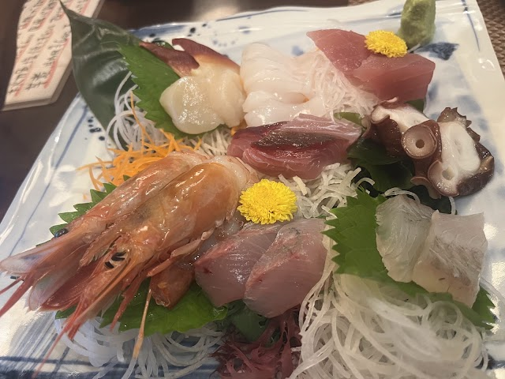
| 営業時間 | 月・火・水・木・金・土 17:00〜23:00 |
|---|---|
| 定休日 | 日曜 |
| 住所 | 山形県鶴岡市本町３丁目４−３ |
| 予約 | 可 — ☎ 0235-22-5503 ／ 公式サイト |
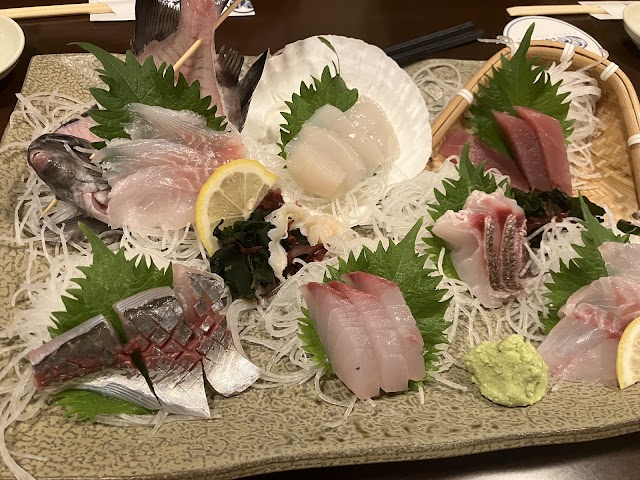
| 営業時間 | 月・火・水・木・日 17:00〜0:00 ／ 金・土 17:00〜1:00 |
|---|---|
| 定休日 | なし(要最終確認) |
| 住所 | 山形県鶴岡市末広町６−１９ FC1ビル 1F |
| 予約 | 可 — ☎ 0235-33-8751 ／ 公式サイト |
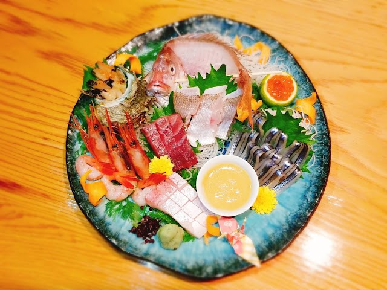
| 営業時間 | 月・火・水・木・金・土 17:30〜0:00 |
|---|---|
| 定休日 | 日曜 |
| 住所 | 山形県鶴岡市本町１丁目６−４１ |
| 予約 | 可 — ☎ 0235-64-1556 ／ 公式サイト |
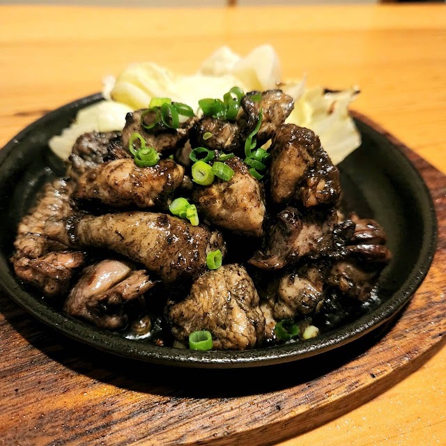
| 営業時間 | 火・水・木・金・土・日 17:30〜0:00 |
|---|---|
| 定休日 | 月曜 |
| 住所 | 山形県鶴岡市東原町１７−１７ |
| 予約 | 可 — ☎ 0235-26-8893 ／ 公式サイト |
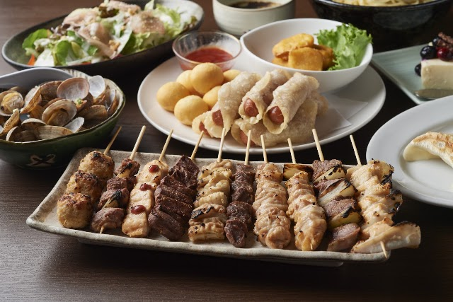
| 営業時間 | 火・水・木・金・土 17:30〜22:00 ／ 日 17:30〜21:30 |
|---|---|
| 定休日 | 月曜 |
| 住所 | 山形県鶴岡市美咲町２−３１ |
| 予約 | 可 — ☎ 050-1122-3725 ／ 公式サイト |
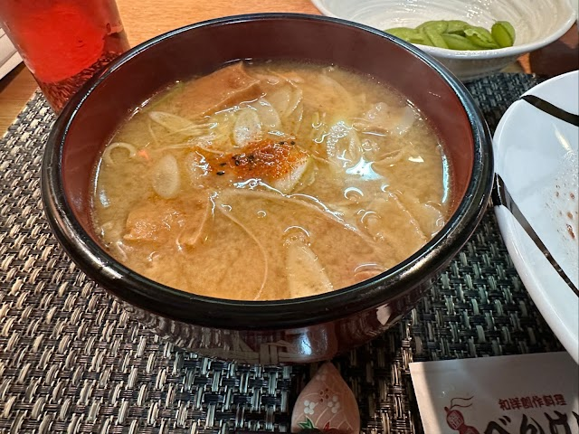
| 営業時間 | 月・火・水・木・金・土 17:00〜22:00 |
|---|---|
| 定休日 | 日曜 |
| 住所 | 山形県鶴岡市錦町１２−１６ |
| 予約 | 可 — ☎ 0235-23-4575 ／ 公式サイト |
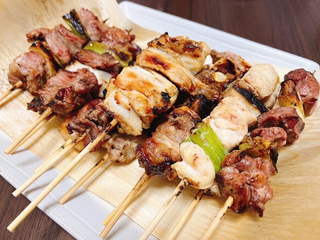
| 営業時間 | 火・水・木・金 17:00〜20:00 ／ 土 16:00〜20:00 ／ 日 16:00〜18:00 |
|---|---|
| 定休日 | 月曜 |
| 住所 | 山形県鶴岡市城南町６−３８ |
| 予約 | 可 — ☎ 0235-22-8796 ／ 公式サイト |
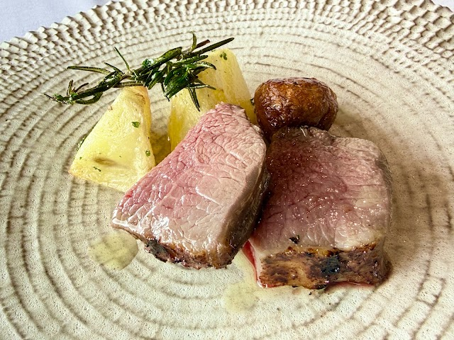
| 営業時間 | 月・火・木・金・土・日 11:30〜15:00, 18:00〜22:00 |
|---|---|
| 定休日 | 水曜 |
| 住所 | 山形県鶴岡市遠賀原稲荷４３ |
| 予約 | 可 — ☎ 0235-26-0609 ／ 公式サイト |
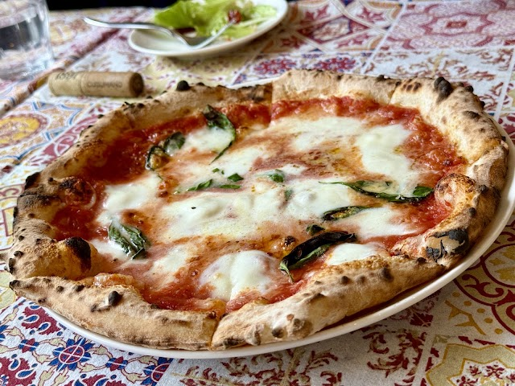
| 営業時間 | 月・水・木・金 11:00〜14:00, 17:30〜20:00 ／ 土・日 11:00〜14:30, 17:30〜20:00 |
|---|---|
| 定休日 | 火曜 |
| 住所 | 山形県鶴岡市羽黒町押口川端３７−７ |
| 予約 | 可 — ☎ 0235-23-0303 ／ 公式サイト |
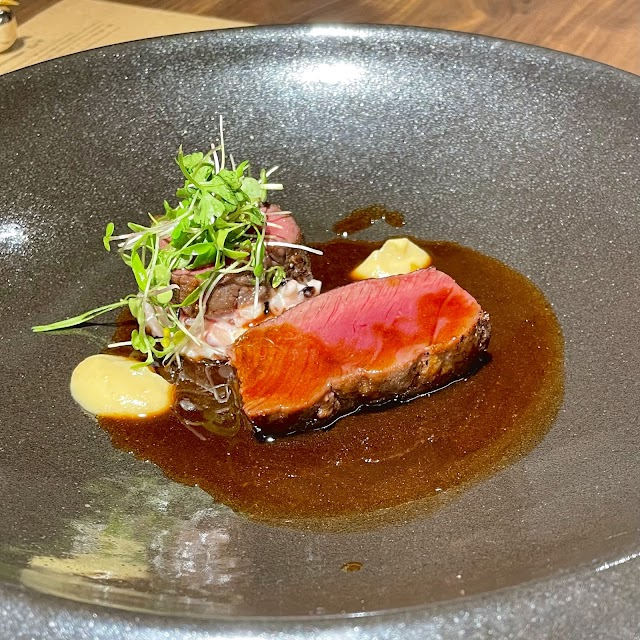
| 営業時間 | 月・火・水・木・金・土・日 12:00〜15:00, 18:00〜23:00 |
|---|---|
| 定休日 | なし(要最終確認) |
| 住所 | 山形県鶴岡市面野山字地ノ本２０１ |
| 予約 | 可 — ☎ 090-2958-0999 ／ 公式サイト |
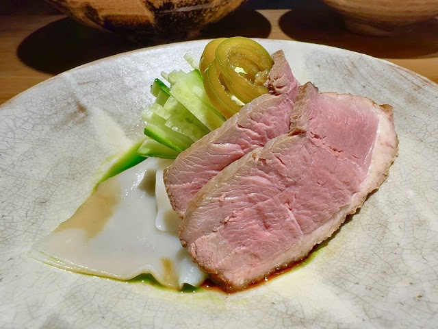
| 営業時間 | 月・金・土 18:00〜22:00 ／ 火・水・木 11:30〜14:00, 18:00〜22:00 |
|---|---|
| 定休日 | 日曜 |
| 住所 | 山形県鶴岡市末広町６−１０ |
| 予約 | 可 — ☎ 080-6036-8869 ／ 公式サイト |
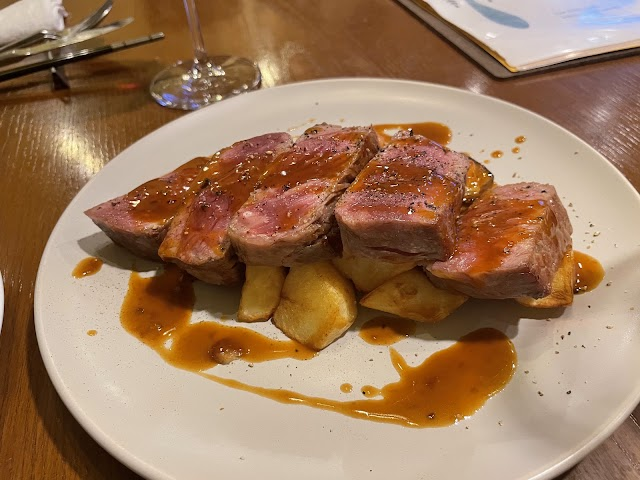
| 営業時間 | 月・火・水・木・金 18:00〜22:00 ／ 土 18:00〜23:00 |
|---|---|
| 定休日 | 日曜 |
| 住所 | 山形県鶴岡市昭和町１２−６１ 昭和ビル 1F |
| 予約 | 可 — ☎ 0235-29-2533 ／ 公式サイト |
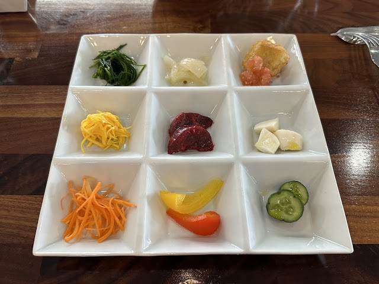
| 営業時間 | 火・水・木・金・土・日 17:00〜21:30 |
|---|---|
| 定休日 | 月曜 |
| 住所 | 山形県鶴岡市錦町１−２３ |
| 予約 | 可 — ☎ 070-1143-0308 ／ 公式サイト |
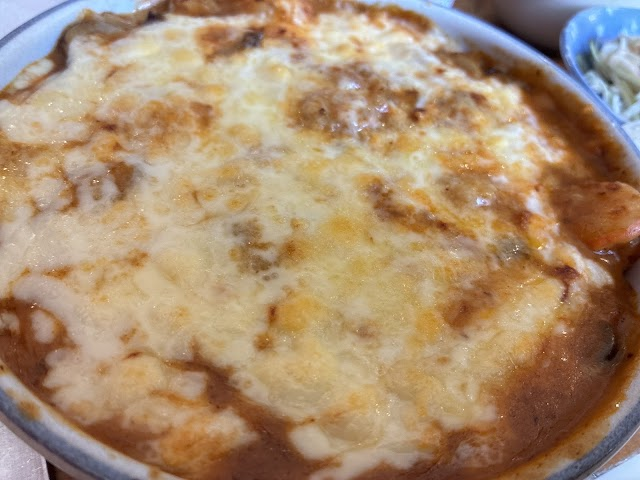
| 営業時間 | 月・火・水・木・金・土 10:45〜15:30 |
|---|---|
| 定休日 | 日曜 |
| 住所 | 山形県鶴岡市大塚町１６−３１ |
| 予約 | 要確認 — ☎ 0235-24-3564 |
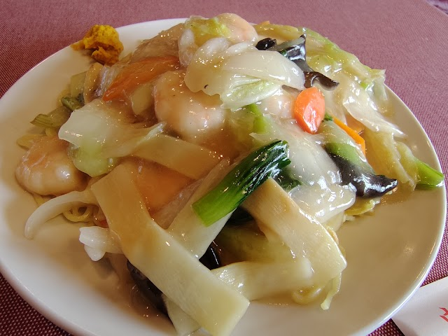
| 営業時間 | 月 11:00〜14:30 ／ 水・木・金 11:00〜14:30, 17:00〜21:15 ／ 土・日 11:00〜14:30, 16:45〜21:15 |
|---|---|
| 定休日 | 火曜 |
| 住所 | 山形県鶴岡市新形町１０−２２ |
| 予約 | 可 — ☎ 0235-22-4661 ／ 公式サイト |
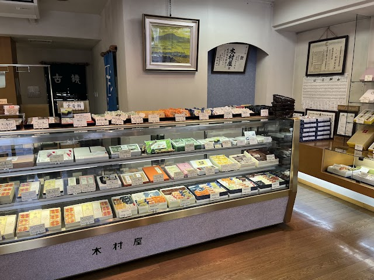
| 営業時間 | 月・火・水・金・土・日 9:00〜18:00 |
|---|---|
| 定休日 | 木曜 |
| 住所 | 山形県鶴岡市山王町９−２５ |
| 予約 | 要確認 — ☎ 0235-22-4531 ／ 公式サイト |
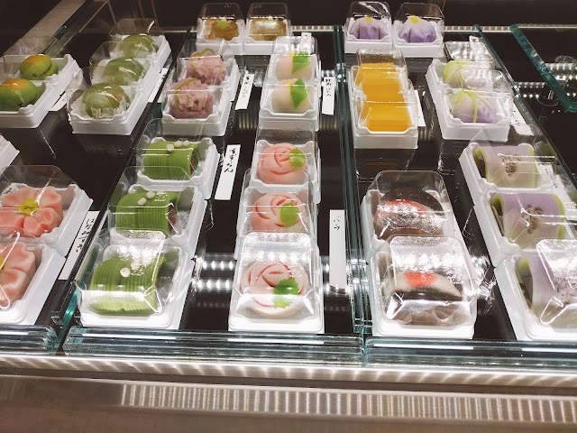
| 営業時間 | 月・火・水・木・金・土・日 9:00〜18:00 |
|---|---|
| 定休日 | なし(要最終確認) |
| 住所 | 山形県鶴岡市本町３丁目３−２２ |
| 予約 | 要確認 — ☎ 0235-22-1414 ／ 公式サイト |
| 営業時間 | 月・火・水・木・金・土・日 9:30〜18:00 |
|---|---|
| 定休日 | なし(要最終確認) |
| 住所 | 山形県鶴岡市美咲町３３−２１ |
| 予約 | 要確認 — ☎ 0235-28-3111 ／ 公式サイト |
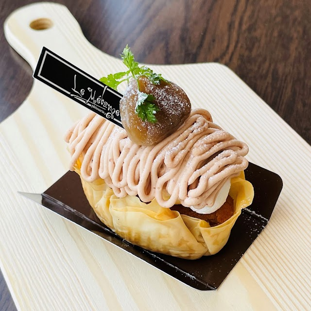
| 営業時間 | 月・火・木・金・土・日 10:00〜18:30 |
|---|---|
| 定休日 | 水曜 |
| 住所 | 山形県鶴岡市みどり町２８−１１ |
| 予約 | 要確認 — ☎ 0235-23-1064 ／ 公式サイト |
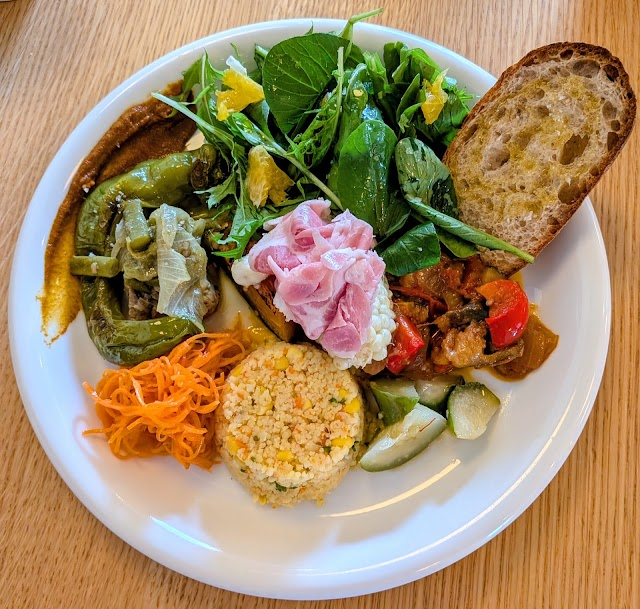
| 営業時間 | 月・水・木・金・土・日 8:00〜17:00 |
|---|---|
| 定休日 | 火曜 |
| 住所 | 山形県鶴岡市上畑町８−５０ |
| 予約 | 可 — ☎ 0235-26-0034 ／ 公式サイト |
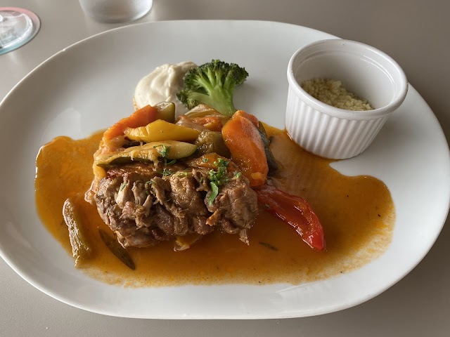
| 営業時間 | 月・木・金・土・日 11:30〜21:00 |
|---|---|
| 定休日 | 火・水曜 |
| 住所 | 山形県鶴岡市湯野浜１丁目８−４３ |
| 予約 | 可 — ☎ 0235-35-0280 ／ 公式サイト |
| 営業時間 | 月・火・木・金・日 10:00〜16:00 ／ 土 10:00〜17:00 |
|---|---|
| 定休日 | 水曜 |
| 住所 | 山形県鶴岡市湯温海甲１７０ |
| 予約 | 可 — ☎ 0235-43-4390 ／ 公式サイト |
本ガイドは個人利用目的で作成。掲載情報は2026年8月時点の調査に基づく。写真出典: Google Maps投稿写真(©各投稿者/Google)。